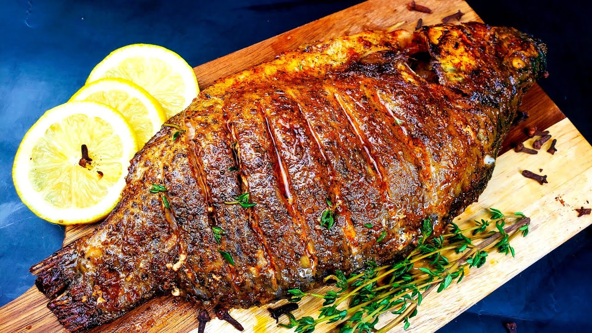

Tilapia

Fish...or as I like to call it, "The chicken of the sea".
If salmon is the filet mignon of river fish, then Tilapia is the McDonald's, but it's still delicious when seasoned properly.
So I guess it's time for us to DIVE right in to this recipe then huh gang?
I'll see myself out
Ingredients
- 4 (4 ounce) tilapia fillets
- salt and ground black pepper to taste
- ½ cup all-purpose flour
- 1 tablespoon olive oil
- 2 tablespoons unsalted butter, melted
- 1 tablespoon lemon juice, or to taste (Optional)
- 1 teaspoon chopped fresh flat-leaf parsley, or to taste (Optional)
- ½ teaspoon chopped fresh thyme, or to taste (Optional)
Recipe
- Rinse tilapia fillets in cold water and pat dry with paper towels. Season both sides of the fillets with salt, pepper, and garlic powder.
- Place flour into a shallow dish. Gently press each fillet into the flour to coat and shake off any excess. (or if you have celiac disease like me ignore this step all together and leave the bread eaters to their glutaneous ways.)
- Heat a large skillet over medium-high heat. Cook tilapia fillets in the hot oil until fish flakes with a fork about 4 minutes per side. (this online recipe is weird, it usually only takes about a minute and a half when I do it but who knows...do whatever you want.)
- Brush melted butter onto the tilapia fillets in the last minute before removing from the skillet.
- Drizzle fillets with lemon juice and garnish with parsley and thyme.